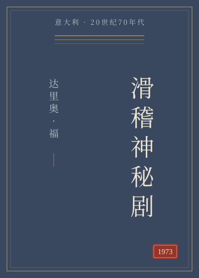
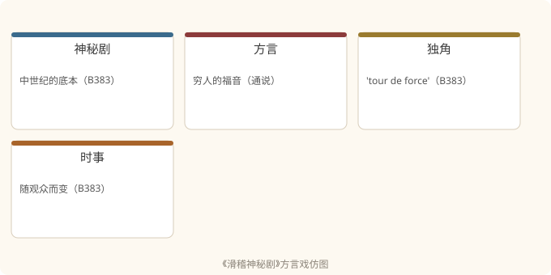

滑稽神秘剧
一、基本信息
| 作者 | 达里奥·福 |
|---|---|
| 成书/出版 | 1973年（Britannica B383：Mistero Buffo (1973)——'solo tour de force'） Dario Fo — Encyclopaedia Britannica（百科全书） |
| 国别/地区 | 意大利 |
| 时代 | 现当代 · 20世纪70年代 |
| 体裁 | 独角戏（系列） |
| 语言 | 意大利语（方言） |

《滑稽神秘剧》方言戏仿图（主题·结构图）
二、创作背景
Britannica（B383）：'solo tour de force'——'based on medieval mystery plays but so topical that the shows changed with each audience'（基于中世纪神秘剧，但如此切合时事以致随观众而变）。
Britannica（B383）：福——giullare（中世纪游吟艺人）传统的复兴者（Lu santo jullàre Françesco 1999 交叉）。
题材（通说待核）：福的独白戏仿：圣母的'方言诉苦'与穷人的福音。
三、内容脉络
（通说待核）福音故事的方言戏仿：'松子圣母'等段落（段名通说待核）。
（通说待核）'随观众而变'的即兴（B383）。
四、主要人物表
| 人物 | 身份 | 说明 |
|---|---|---|
| 游吟艺人（福） | 独角讲述者 | （B383：solo tour de force） |
五、主题与艺术特点
- '中世纪神秘剧'的现代滑稽（B383）。
- 方言的政治（通说待核）。
- 穷人的福音（通说待核）。
六、影响与评论
- Britannica：'solo tour de force'（B383）。
Dario Fo — Encyclopaedia Britannica（百科全书） - Britannica：1997诺奖（B383 交叉）。
Dario Fo — Encyclopaedia Britannica（百科全书）
七、阅读建议
难点
- 方言独白的语感。
- '神秘剧'的中世纪底本。
- 《滑稽神秘剧》中译本（人民文学等——通说待核）。
- 意大利文原版。
达里奥·福独角戏首选；与《意外死亡》对读。
八、待核实
- 段落名（《松子圣母》说——通说）核对。
- 1973年首演细节待核。
- '即兴'的版本差异待核（B383：changed with each audience）。
本页主要来源
相关作品：一个无政府主义者的意外死亡秃头歌女犀牛
达里奥·福的其他收录作品：一个无政府主义者的意外死亡滑稽神秘剧